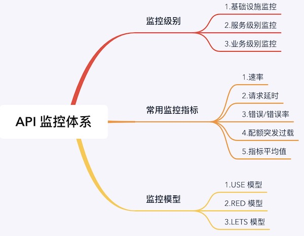

前言
针对 API 的管理，非常重要的一点就是做 API 监控。前段时间看了 Nginx 社区发布的一本关于 API 流量管理的书，感觉书中的内容还不错，结合我在实际应用中的经验，今天就来梳理一下 API 的监控的一些方法。
看了原文书感觉国外这些技术人在做事之前还是很有条理的，另外最近在也在读一本社区管理的书，其中他们就把社区研究的层次分为了 3 层：框架（Frameworks），理论（Theories），模型（Models）。下面简单解释一下，感觉这个方法论非常实用，我感觉在很多地方都可以使用。
- 框架是说大方向，明确各个部分的关系，让大家能在这个框架之下达成共识；
- 理论是比框架更明确的一个概念，它是在框架之下对每个模块或者子模块的进一步细化，或者是处理具体事情的技术或者原理性的解释以及指导；
- 模型是更为具体的，解决特定事件的解释和指导。研究人员使用模型来测试基于理论的各种假设，模型可以使用多种工具开发，包括数学、统计技术等。
这是一个做事情的框架体系，大家在思考和处理事情的应该也是有这样一个模式的。
所以今天我在梳理 API 监控方面的内容的时候也想按照这样一个基本思路来。
API 管理的基本框架
在 API 的管理上我是认为有几个方面的：
- API 的基本开发管理（API设计，接口元信息，调用管理，测试，限流，路由管理等等）
- API 的基本监控（流量，耗时，错误码，可用性监控等等）
- API 的安全管控（STL，鉴权，证书等等）
- API 的高级特性（可扩展性，缓存，伸缩，性能分析，流量放大分析等等）
从 API 的基本开发管理和到高级的功能分层进行管理，从基本可用到安全可控。API 的基本设计也是一个非常复杂的事情，要做好一个 API 的设计也不是那么容易的，这部分我后面也打算写一个系列来介绍一下。今天的重点是是 API 的基本监控。
API 监控级别
API 监控同样也是符合上面的理论，也是有一个理论框架的。对于 API 的监控首先是分级别的，这是为了监控的实施，很多事情分层之后就会很清晰，无论在理解上和该怎么实施上都会很清晰。那看看对于 API 监控是怎么分级的。
- 基础设施监控
- 服务级别监控
- 业务级别监控
基础设施监控
这里我们主要关注的是硬件cpu，磁盘，内存等的可靠性，还有比如操作系统，队列服务等组件的可靠性。上篇文章也介绍过如何快速分析定位系统中的这些问题。这些是服务运行稳定的基础，所以对这些设施的监控是一个通用的做法，这个不是只有在 API 监控中才有的，但是如果要做完整的 API 监控，最后一部分当然是不可缺少的。
服务级别的监控
在服务级别的监控中，主要关注的是服务组件是不是健康可靠的，比如监控数据的读写，文件创建，服务的基本存活，服务调用延迟，服务的性能等等。
业务级别监控
最后是业务级别的监控，不同的应用场景和业务，对于监控的内容也是不一样的。比如你要监控购买的量，监控登陆用户，消息发送的条数，收到的礼物数，走过的路线等等，不同的业务场景需要监控的指标是不一样的，这部分非常特性。
API 监控常见的监控指标
虽然上面说的第三个级别的监控是有很多特性，但是对于监控的内容来说他们还是有一些共性的。所以这里给大家列一些常用的监控指标类型。
速率
速率是一个常用的监控指标，数据的发送速率，增加速率，访问速率，调用速率等等，这个指标旨在监控你的系统的服务能力。一般来说这个指标越大，服务能力越强。
请求延时
这个指标很多时候和上面的速率这个指标是有关系的，一般来说这个这个数值越小，说明你的服务性能越好。这个指标一般可以在 API 网关上进行采集或者是在客户端采集。
错误率
对系统错误的监控对一个系统来至关重要，还有对不同错误码的统计计数，有了对这些个指标的监控，系统的可用性监控就有了。
如果单纯的只看前面两个指标也是有问题的，因为有时候在系统故障的时候系统的访问速率和请求延时会表现的很好，但是实际上是有很多错误请求和错误返回，比如系统的快速错误返回，大量错误的请求等。
配额突发过载
这种也是要监控的一个点，很多时候有瞬时过载的情况，这也是暴露了系统的一些潜在问题。
指标平均值
对于系统的稳定性、服务能力以及服务特点的监控这个是有必要的，很多时候不但要看当前状态值，还要进一步看服务指标最近 5 分钟、 10 分钟、15 分钟等的平均值。
API 监控常见的监控模型
上面都是铺垫了，这部分其实才是我今天主要想分享的的内容，我感觉这部分内容才是比较有意思的。我上面列举了那么多指标类型，每个类型在实际实施的时候又会派生出很多指标，那么问题就来了，我们在分析系统问题的时候是所有的指标都要看吗？这个估计很难，那怎么做呢？
说起这个问题让我想到股市中的一种做法：指数。提到这里大家如果了解所谓的指数，应该就知道我要说什么了，股票指数他可以通过对股市中的一些圈定的股票指标用特别的算法，计算出来一个值来表示股市的好坏。比如美国有纳斯达克综合指数，中国有上证指数和深成指数。
所以我这里介绍的这个所谓的监控模型也是类似的想法，但是这个模型是目前其它公司或者组织已经梳理好的，不是我的原创哈。
USE 模型
这里介绍第一种模型：USE (Utilization, Saturation, and Errors)，这个模型最早是由 Brendan Gregg 大神提出来的，目前在 Netflix 公司，大名鼎鼎的《BPF Performance Tools》这本书的作者，1300 多页的大部头。他提到他提出这种模型就是为了让大家可以快速的定位问题解决问题，而不用陷入细节而不知所措。
Gregg 说通过问 3 个问题就应该可以对你的系统可以有非常好的理解了：利用率如何？饱和度如何？错误或者错误率如何？
Utilization 利用率是指对系统诸如 CPU，磁盘，I/O 等的利用情况如何，是否空闲。
Saturation 饱和度是系统等待处理的业务或者请求程度，表示是否超过了目前系统的最大承受能力。
Errors 错误或者错误率这个也比较好理解，就是系统在处理这些业务或者请求的时候出现的错误事件。
关于这个模型更为详细的解释可以去他的个人网站了解：http://www.brendangregg.com/usemethod.html。
实际上也是这样的，我在前面一篇翻译的文章中介绍如何定位 Linux 系统的问题，其实大部分的方法思路都是这样的。
或许你说这个和 API 监控有什么关系？Gregg 最早提出的目标确实是针对系统的指标分析，但是实际上这套方法模型应用在系统线程分析，网络请求分析也是可以的。但是从根本来说它还是主要针对基础设施的监控模型。
RED 模型
RED (Requests, Errors, and Duration)，这个模型是由 Tom Wilkie 在 2015 的时候提出来的，它是对 USE 模型的一种升级，USE 模型在单机模型中会比较好用，但是在目前的分布式环境，微服务环境下，其实很难快速的来定位问题了，所以 RED 模型在针对复杂系统的健康评估的时候就比较有用了，可以看到使用的指标并不是很多，也是像上面的灵魂三问一样：你的系统请求量多大？错误或者错误率有多少？耗时多大？
这里对这三个指标就不多解释了，实际上大家在平时对 API 接口的考察估计也差不多会用到这些指标，但是我估计很多人从来没有想过通过指标来构建一种模型，从而反映系统的的整体稳定性和可靠性。而且尤其对于微服务来说这个模型还是非常不错的。
可以看出来这就是对应上面的服务级别监控。RED 模型是正对系统的整体可用性进行的一种评估方式。通过对系统请求的完整监控（从请求开始到返回的整个过程），并且从中抽取 3 个关键指标，来评估系统的可用性。RED 模型一般是在 API 网关这一层来使用，在这一层就可以对服务进行监控了。
LETS 模型
LETS (Latency, Errors, Traffic, and Saturation)，整个模型是 Google 在 2003 年提出的，其实这个模型是 Google 提出他们的 SRE 的时候提出来的一个模型，这 4 个指标在 SRE 这本书中被称之为 “The Four Golden Signals”。书中说如果你只能关注 4 个指标，那就关注这 4 个：延迟，错误，流量和饱和度。
“If you can only measure four metrics, focus on these four: Latency, Errors, Traffic, and Saturation.”
这个模型用最小关注指标集，提供了对系统可用性的评估。通过这 4 个指标的关注你就会发现系统中的大多数问题。它不像 USE 一样比较底层，它是一个针对服务可用性的监控分析模型。
总结
做事情还是得有一定的方法论来指导的，今天这里总结的这篇文章目的就在于对 API 的监控方面进行梳理，梳理出了 API 监控的基本层次，常用指标和常见的监控模型。
对于 API 的监控模型来说，这里也要说明一下，不同的监控模型关注的问题点不同，或者说关注的监控层次不同。而且在实际的团队中这块的工作一般是会分为几个组织来共同完成的。不同的团队关注点会不一样，所以可以针对具体的关注点可以选择不同的模型。
另外要说的是，对于 API 的监控，虽然上面提到的层次、指标和模型都是前人总结的。但是时代在发展，技术在进步，大家在实际场景中使用的时候应该一方面选择合适可用的，另一方面应该也可以想一想，可选的模型是否适应现在的场景，如果不适应又没有更好的选择的时候是不是自己可以抽象开发出一个针对自己场景的模型。让定制的模型可以准确的反映自己系统的状态。
一图胜千言：

关注「黑光技术」，关注大数据+微服务